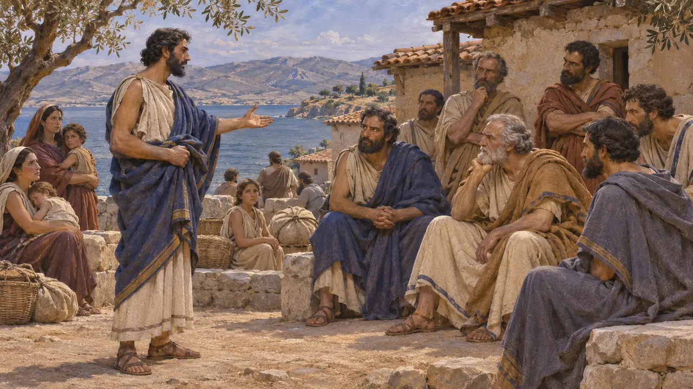
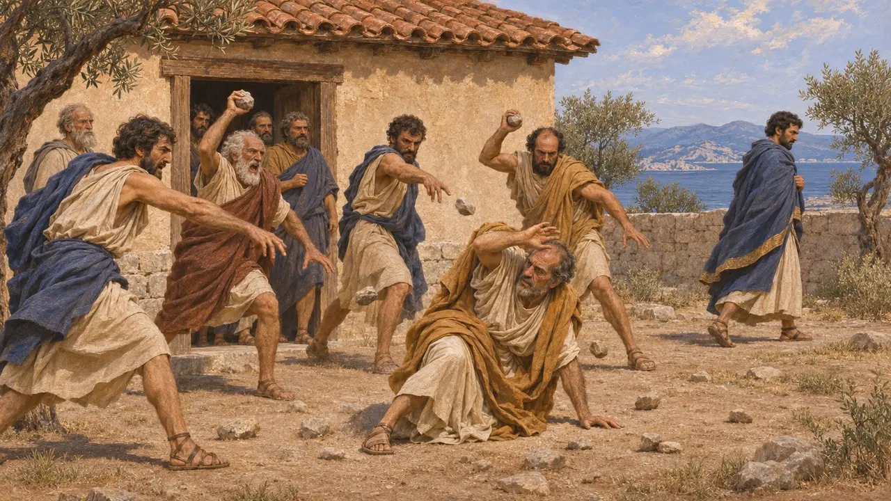
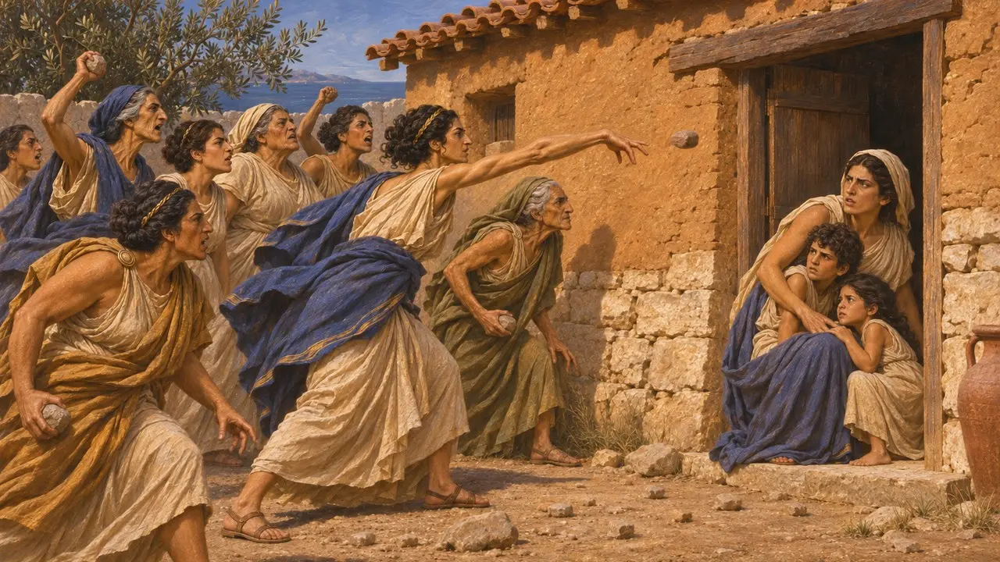

Licida
Consigliere ateniese lapidato a Salamina per aver sostenuto le condizioni di Mardonio, 479 a.C.
Licida era membro del consiglio ateniese nel 479 a.C. Secondo Erodoto, fu ucciso dai suoi concittadini dopo aver consigliato di sottoporre al popolo l'offerta di Mardonio. La vicenda mostra con quanta fermezza gli Ateniesi, nel racconto di Erodoto, rifiutarono le condizioni dei Persiani.
Nel gioco: Licida non ha una meccanica propria. Viene nominato negli articoli degli eventi sulla presa di Atene da parte di Mardonio e sull'ambasceria di Alessandro di Macedonia ad Atene.

L'offerta portata a Salamina
Racconto anticoErodoto racconta che Alessandro di Macedonia portò agli Ateniesi, nel 479 a.C., l'offerta di Mardonio: il Re avrebbe ricostruito i loro templi e li avrebbe lasciati liberi e in possesso della loro terra, se fossero diventati suoi alleati. Gli Ateniesi rifiutarono. Quando poi Mardonio marciò sull'Attica, inviò un araldo di nome Murichide agli Ateniesi, che avevano lasciato di nuovo la loro città e si trovavano a Salamina.
Herodotus 8.140-144, 9.4

La proposta e la lapidazione
Racconto anticoErodoto racconta che Licida, un consigliere, espresse l'opinione che il consiglio dovesse accettare le parole dell'inviato e portarle davanti all'assemblea. I consiglieri e gli Ateniesi radunati fuori, infuriati, lo lapidarono. Murichide fu rimandato indietro illeso.
Herodotus 9.5

Il destino della sua famiglia
Racconto anticoErodoto aggiunge che le donne ateniesi, udito il tumulto, si recarono di propria iniziativa alla casa di Licida e lapidarono la moglie e i figli di lui. Egli presenta il fatto come parte dello stesso evento e non descrive alcun processo né decreto.
Herodotus 9.5
Un nome diverso negli oratori posteriori
ContesoGli oratori ateniesi più tardi raccontano una storia simile, ma chiamano l'uomo Cirsilo e la collocano al tempo dell'invasione di Serse, come in Demostene e Licurgo. Erodoto è la fonte più antica e fornisce il nome Licida. Gli storici non sanno dire se il nome e l'ambientazione siano cambiati nel corso dei racconti o se gli oratori abbiano attinto a un'altra versione. Demostene afferma inoltre che Cirsilo fu corrotto, un'accusa che Erodoto non muove.
Demosthenes 18.204; Lycurgus, Against Leocrates 122
Cosa mostra l'episodio
Racconto anticoErodoto si serve dell'episodio per mostrare la risolutezza degli Ateniesi mentre gli Spartani indugiavano a inviare un esercito. Il racconto proviene soltanto dalla parte greca e nessun documento persiano menziona Licida o le condizioni. Se la storia sia esatta nei particolari non si può verificare.
Herodotus 9.5
Fonti
- Herodotus 9.4-5
- Herodotus 8.140-144
- Demosthenes 18.204
- Lycurgus, Against Leocrates 122
- Cicero, De Officiis
- P. Briant, From Cyrus to Alexander, 2002